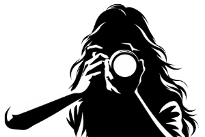
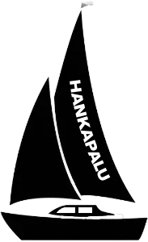
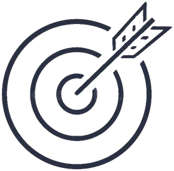
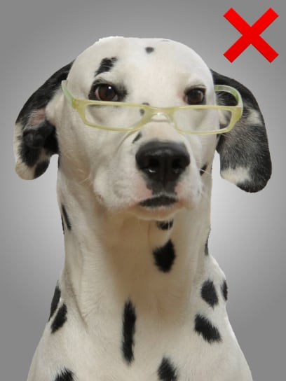
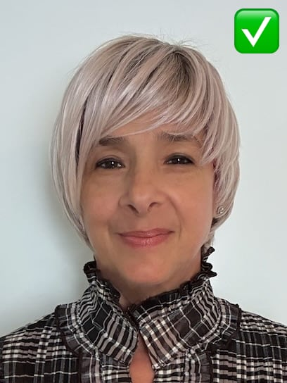
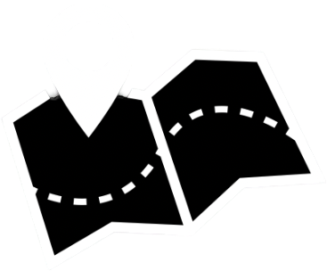
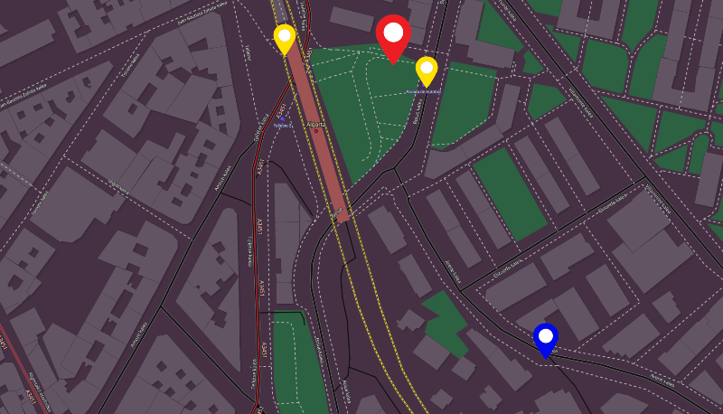

¿Toca renovar el DNI o el PASAPORTE en Getxo?
EuskeraTu foto perfecta y lista al momento
Fotos de DNI y pasaporte con calidad profesional y validación
biométrica disponible para 87 paises.
¡Sin cita previa ni esperas!
Junto a la estación de metro de Algorta, en la plaza de Villamonte y a solo dos minutos de la oficina de renovación del DNI en Getxo.
¿CÓMO FUNCIONA?
Entras, te haces la foto y listoLlegas

Estamos junto a la estación de Algorta, en la plaza Villamonte. Nos encontrarás nada más llegar en metro o autobús.
Te hacemos la foto
Utilizamos cámara profesional e iluminación de estudio para conseguir una fotografía nítida, natural y favorecedora.
La comprobamos

Con el software biométrico especializado verificamos que la fotografía cumple los requisitos técnicos oficiales de 87 países del mundo.
Te la llevas

Tus fotos están listas al instante. Después, solo tienes que caminar dos minutos hasta la oficina del DNI.

!CALIDAD PROFESIONAL!
Buena foto. Cero complicacionesFotografía profesional
Cámara y equipo de iluminación de estudio para conseguir un resultado cuidado y natural.
Validación biométrica
Comprobamos los requisitos técnicos de cada fotografía mediante software especializado.
Repetición garantizada
Si la fotografía no cumple los requisitos técnicos que verificamos, la repetimos enseguida.
Servicio inmediato
Sin cita previa y con las fotografías listas y verificadas al momento.

!TECNOLOGÍA BIOMÉTRICA!
Una foto bien hecha y comprobada al detalleLas fotografías para documentos oficiales, tanto las de España como las de otros países del mundo, deben cumplir requisitos técnicos específicos. Por eso utilizamos equipos profesionales y software biométrico especializado que nos permite comprobar el encuadre, la posición del rostro, las proporciones y el fondo.


Cuidamos cada detalle para que tu fotografía cumpla los requisitos técnicos establecidos. También nos importa que te guste cómo saliste.

!UBICACIÓN!
Estamos justo donde nos necesitas
Estamos en la plaza Villamonte A-2.
Calle Bolue 3BIS, Algorta, Getxo
Y a solo dos minutos andando de la oficina de expedición del DNI en
Algorta.
Pin rojo: Tu Foto Estudio.
Pin amarillo: Metro y Bus.
Pin azul: Oficina de DNI.

Ven directamente, sin necesidad de pedir cita en nuestro estudio. Te hacemos las fotos al momento y podrás continuar con tu trámite sin complicaciones.
!REPASAMO LO IMPORTANTE!
Tu foto hecha. Tu trámite, en marcha- Sin cita previa.
- Fotografías listas al instante.
- Calidad de estudio profesional.
- Validación biométrica.
- Estamos cubriendo 87 paises.
- Repetición incluida.